Un Walkman japonés que sólo aceptaba música cargada con SonicStage terminó corriendo un reproductor propio con audiolibros, podcasts que se bajan solos por el teléfono, el DSP de Sony, juegos y modo foco. Esta es la historia completa: qué probamos, qué funcionó, qué no y qué falta.
Todo se hizo sin tocar las claves de DRM del equipo y manteniendo siempre el firmware de Sony como arranque de respaldo.
El equipo corre el firmware oficial japonés 1.02 con dos cambios mínimos: un gancho que ejecuta H:\HB\boot.sh antes de la interfaz de Sony, y un parche de 3 bytes que elimina el aviso de “Simple Mode”. Si se borra la carpeta HB, arranca exactamente como de fábrica.
Desde el reproductor, “Volver al Walkman” pasa a la interfaz de Sony sin reiniciar. Desde la interfaz de Sony, mantener HOME 3 segundos vuelve al reproductor. La música de Sony (86 temas en OMGAUDIO) sigue intacta.
El NW-A829 japonés aparece como unidad H: pero ignora los MP3 copiados a mano: sólo reproduce lo que SonicStage escribe cifrado en OMGAUDIO. Hicimos backup del equipo y preparamos 86 MP3 de 7 discos con tags ID3v2.3 y tapas embebidas.
La versión japonesa 4.4 mostraba “????” en Windows en castellano. Con la 4.3 en inglés, región OpenMG Japón, importando por File › Import › M3U, se transfirieron los 86 temas con tapas. El 25 confirmaste que suenan.
Los paquetes .UPG usan el formato Rockbox v1 (MD5 + DES). Sacamos las claves por modelo del propio script de Sony, sondeamos el equipo por SCSI sin permisos de administrador y aplicamos el JP 1.02 oficial como prueba de bajo riesgo.
El firmware internacional, re-empaquetado con la clave japonesa, arranca con menús en castellano e inglés. Pero al conectar el USB el modo MTP falla: necesita un certificado WMDRM de fábrica que el equipo japonés no tiene.
fwtrig.py: flashear sin clicsDescubrimos que un comando SCSI hace que el equipo se flashee solo con el .UPG que tenga en la raíz. Desde ahí cada prueba fue un ciclo de ~60 segundos sin tocar el actualizador de Sony. Fue la herramienta clave de todo el proyecto.
Builds con logs de arranque, un archivo EXPERIMENT.cfg que el equipo lee al iniciar y vuelca resultados a RESCUE_DEBUG. Conclusión: el modo de contenido WMT/MTP del firmware internacional no es viable en esta unidad. Dejamos de tocar los nodos NVP porque guardan material de DRM.
Quedó un firmware internacional estable con menú en castellano. Después notamos que el JP 1.02 oficial ya tenía castellano en el menú. El sprint dejó herramientas y conocimiento, pero ningún beneficio visible que no tuvieras ya.
De acá salió la regla: probar primero la opción barata en el equipo.
La idea era escribir la base de datos de Sony a partir de MP3 comunes. En esta unidad los archivos que escribe SonicStage están cifrados con OpenMG de punta a punta; un OMA sin cifrar da “formato no compatible”. Reproducir ese cifrado sería saltar el DRM, así que lo abandonamos y decidimos hacer nuestro propio reproductor.
SoC NEC MP201 (ARM926EJ-S + DSP SPXK5), DAC Cirrus Logic CS42L51, Bluetooth CSR BlueCore, 20,8 MB de RAM, pantalla 240×320, Linux 2.6.10. Volvimos al JP 1.02 oficial como base y le agregamos el gancho de arranque (1.02-40).
Zig 0.15.2 portátil, enlazando contra la glibc 2.3.3 del equipo. La trampa: el kernel usa llamadas al sistema OABI, así que los binarios estáticos con musl se caían. Con eso resuelto, el primer programa dibujó en el framebuffer.
Emparejamos y mandamos audio A2DP fuera de la interfaz de Sony. El error 151 se resolvía conectando inmediatamente después del “Bonding completed”. Escuchaste la melodía en el parlante.
Lista de carpetas, reproducción con libmad, posición guardada por archivo, temporizador y retorno a Sony. “Anduvo perfecto.”
Modo foco con campanas y ruido blanco/rosa/marrón; Game Boy (gnuboy) con Pokémon Crystal; la fuente de 22 px y las texturas originales de Sony leídas del firmware; inicio 3×3 con la animación de íconos de Sony; música por artista y álbum con tapas; FLAC y AAC; ecualizador; Doom (Freedoom); NES; velocidad de lectura; gapless; ReplayGain; letras .lrc; despertador; watchdog que reinicia si algo se cuelga.
Un parche de 3 bytes en el binario de Sony evita el aviso que aparecía en cada arranque. Confirmaste que desapareció.
El kernel no tiene red ni BNEP. Armamos todo en espacio de usuario: BNEP sobre L2CAP crudo del stack de Sony, lwIP para TCP/IP, mbedTLS para HTTPS. Con el anclaje del Galaxy S23+ funcionó DHCP, DNS y HTTPS, pero a 1 KB/s.
Un sniffer que lee la memoria del kernel mostró que la mitad de los paquetes llegaba cortada: el buffer del puerto serie se desbordaba. La solución fue una sola opción (ASYNC_LOW_LATENCY). Pasamos de 1 a 50–65 KB/s y devolvimos el chip Bluetooth a su configuración de fábrica.
“Buscar episodios nuevos” lee feeds.txt, se conecta por el teléfono y descarga en segundo plano mientras escuchás. Suma Podcasting 2.0: transcripciones (SRT/VTT) como letras y capítulos navegables.
Toda la decodificación de Sony corre en un DSP NEC aparte, vía OpenMAX. Lo abrimos desde nuestro programa: MP3 a 4,6× tiempo real con 0,2% de CPU del ARM. Escuchaste los WAV y confirmaste que el tono y la velocidad eran correctos.
Portamos gpSP (GBA) con BIOS abierta. Armamos un modo control remoto: el Walkman se presenta ante el teléfono como teclado y control multimedia Bluetooth, y sus botones manejan el teléfono.
FLAC de 24 bits sale en 32 bits al DAC; un remuestreador polifásico convierte 88,2/96/192 kHz a 44,1 kHz. El DAC no acepta tasas mayores.
El S23+ se emparejó y conectó con el Walkman en el segundo intento. No quedó registrada ninguna tecla: probablemente nadie apretó botones del Walkman durante la prueba.
Encontramos la página de efectos del DSP. DSEE sólo actúa si se le pasa el bitrate real del MP3 (+7 dB por encima de 11 kHz en un audiolibro de 64 kbps). ATRAC sin DRM también decodifica.
En modo directo el DSP envía el audio al DAC sin pasar por el ARM. Funciona con MP3, AAC, WMA y ATRAC, con pausa y búsqueda. AAC baja de ~13% a ~5% de CPU.
Dos cuelgues: acceso desalineado al decodificar tapas JPEG y una re-entrada en lwIP durante el handshake TLS. Agregamos un reporte de fallas con dirección y registro. La sesión siguiente no tuvo caídas.
Tres feeds, un episodio de 64 MB en 21 minutos, con la música sonando. Corregimos nombres con acentos: la partición FAT se monta sin UTF-8 y aparecían duplicados con caracteres rotos.
El equipo y Windows escribían en la misma partición al mismo tiempo. chkdsk H: /F la reparó y quedaron reglas sobre quién escribe cuándo.
La red estaba limitada por CPU. Con paquetes de 1400 bytes y la CPU a 248 MHz durante descargas: 4,4 MB en ~35 segundos.
Barra plateada, barra de estado con los íconos originales, fondo azul grisáceo, barra naranja de selección, pantalla de reproducción como la de Sony. Borrado manual de episodios (nunca se borra nada solo).
Audio que no se corta con ninguna pantalla; reanudación de descargas segura; guardado atómico; gobernador de CPU por carga; velocidad de voz con Sonic; recorte de silencios y realce de voz; crossfeed y loudness para auriculares. Encontramos que el equipo arranca a 248 MHz y un error de los filtros que generaba un offset de continua enorme.
Clear Bass (~55 Hz) y 5 bandas (400 Hz, 1k, 2,5k, 6,3k, 16k) en pasos de 2 dB. La pantalla Sonido › Ecualizador ahora es el de Sony y funciona con Máxima batería.
El equipo recuerda el último modo usado. Si el reproductor se cae, se reinicia una vez y retoma lo que sonaba. La pantalla LCD se apaga de verdad con la luz apagada.
Episodios con tapa y progreso, mosaico de álbumes, pantalla de Descargas, volumen en 30 pasos estilo Sony, dígitos de Sony. Perfil AutoEq para tus KZ EDX Pro. “Quedó espectacular.”
podsync.py equivalente en la PC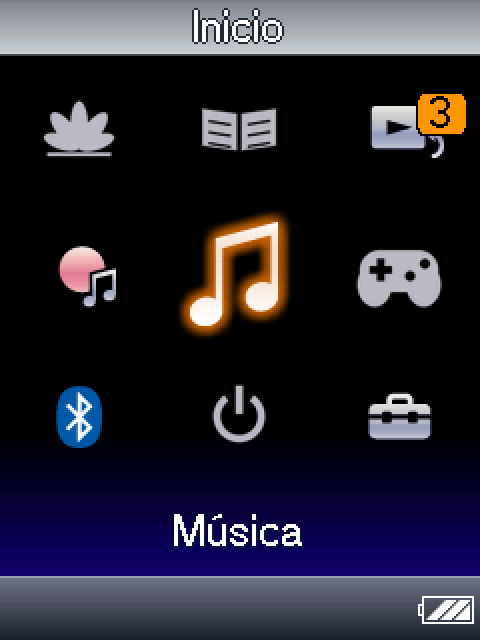
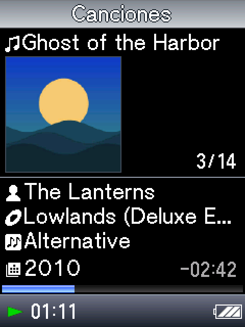
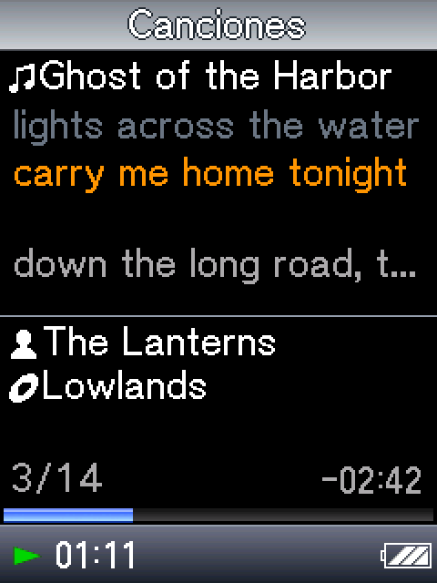
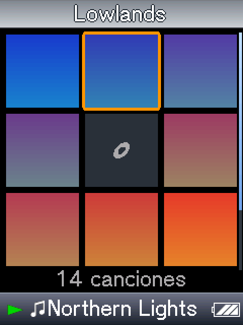
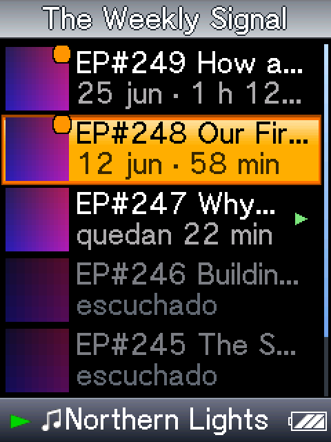
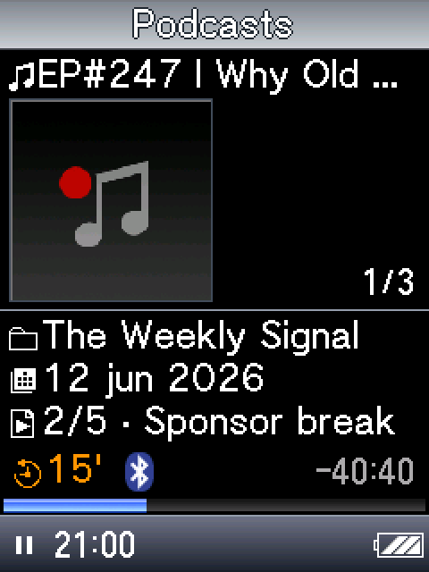
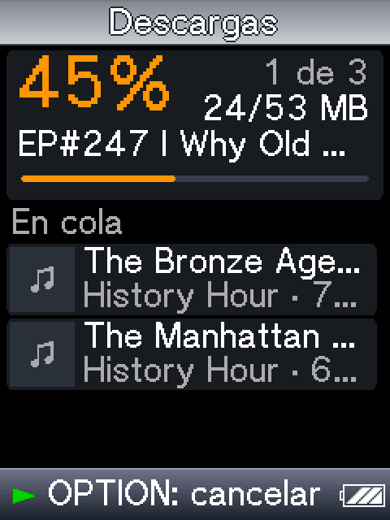
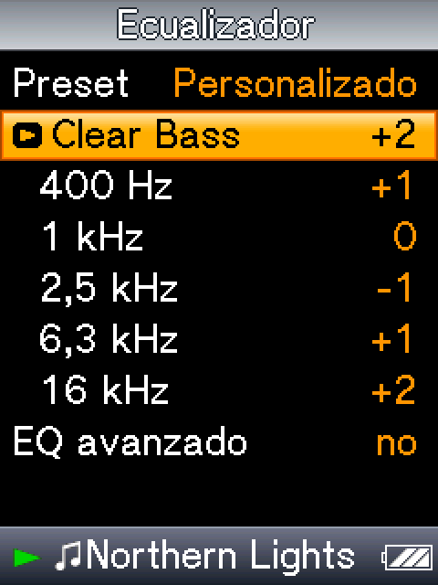
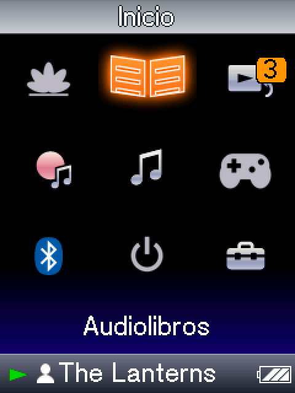
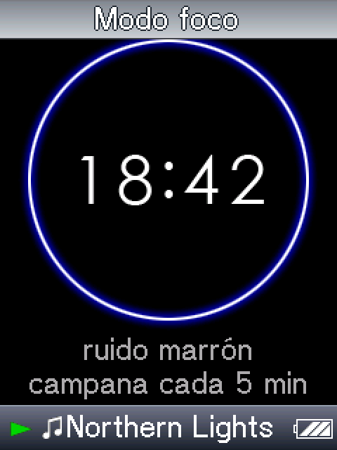
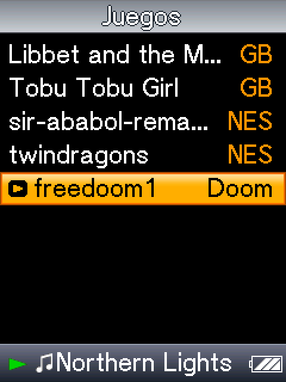
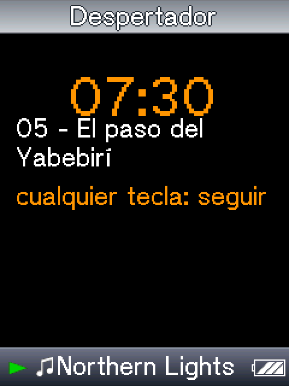
ACKs, DHCP más rápido, TLS con X25519, GET condicional y gzip en feeds. Prueba: “Buscar episodios” dos veces seguidas con el anclaje del teléfono activo, y mirar en el log “pan: up in X s” y “tls … in X s”.
once/z_battery.sh (libmad vs DSP vs directo, 30 min cada uno) no llegó a terminar. Falta también la comparación justa Sony vs nuestro con “Máxima batería” activo y sin efectos de auriculares.
El ajuste de brillo usa el ioctl correcto de Sony desde el 30/09, sin verificar. Confirmar con el medidor que las interrupciones del LCD bajan a ~0 con la pantalla apagada en uso real.
El medidor ya registra memoria libre, caché y RSS. Hace falta una sesión en cada modo y exportar /var/hb/meter.txt. Después, sacar las líneas del medidor de boot_dual.sh.
El teléfono se empareja y conecta con el Walkman, pero nunca se probó que los botones del Walkman lleguen al teléfono. Probar desde Bluetooth › “Mando para el teléfono”.
Que el teléfono encuentre al Walkman y le mande audio. Nunca se probó.
La alarma programa el RTC antes de suspender; falta confirmar que el equipo se despierta solo.
Mode 7 y uCity se ven bien, pero la prueba de instrucciones Thumb pareció colgarse. Revisar y jugar un rato.
Usarlos con episodios reales. El EP247 de Corridor Cast quedó trabado en 15 MB (CDN de Megaphone): ver si retoma.
La aproximación (error 1,45 dB) se calculó suponiendo el ancho de las bandas. Afinarla con las mediciones reales de out/fx2.
Subir el código a GitHub y armar un instalador simple para que otros dueños del A820 lo puedan probar.
Tarea programada de Windows con podsync.py que corre al enchufar el equipo. Propuesta, no hecha.
Hoy los nombres se traducen a Latin-1 y se pierden caracteres fuera de ese rango. Requiere cambiar el gancho del firmware.
Con Opus en punto fijo, sobre la misma conexión del teléfono.
Hora por SNTP, ListenBrainz, clima con Open-Meteo, cliente Gemini.
PokeMini, SMS Plus, eSpeak-NG para leer texto en voz alta.
Usar las transcripciones de Podcasting 2.0 con un modelo en la nube.
Un LLM diminuto (llama2.c int8), Jazelle para Java en hardware, y código propio corriendo en el DSP.
El firmware internacional necesita un certificado WMDRM de fábrica. Sin él, la creación de la biblioteca se cuelga y la app muere. Conseguirlo de otro equipo sería eludir DRM.
En esta unidad todo está cifrado con OpenMG. Sin cifrado, Sony dice “formato no compatible”.
Está compilado afuera del módulo de Sony. Lo resolvimos en espacio de usuario.
Ayudó un poco, pero la causa real era el buffer serie. El chip volvió a fábrica. Un reinicio en caliente mata el stack.
Clear Stereo no cambia ni un bit. El DAC sólo acepta 11/22/44,1 kHz (con 24 bits).
Ambos rondan el 5% de CPU: libmad con ensamblador ya es barato. El ahorro real está en AAC y en el modo directo.
| Archivo | Para qué sirve |
|---|---|
| firmware_work\fw\fwtrig.py | Flashea o reinicia el equipo por SCSI sin el actualizador de Sony (go <md5>). |
| firmware_work\fw\build_hb.py | Arma el firmware con gancho y parches binarios (hoy 1.02-41, md5 ee63d042…). |
| firmware_work\fw\jp\NW_WM_FW.UPG | JP 1.02 oficial (md5 fa3c6ae0…): vuelta atrás completa. |
| firmware_work\rescue_kit\ | Actualizador oficial preparado para el modo rescate. |
| H:\HB\boot.sh | Arranque: corre once/*.sh una vez, después boot_dual.sh. |
| homebrew\hbplayer\ | El reproductor. build.sh compila; shots.py y mock.c generan pantallas en la PC. |
| homebrew\dspdec\ | Proceso auxiliar que habla con el DSP de Sony por OpenMAX. |
| homebrew\net\ | BNEP, lwIP, mbedTLS, cliente HTTPS, RSS y el sniffer BCSP. |
| homebrew\hello\fixpthread.py | Paso obligatorio después de compilar cualquier binario para el equipo. |
| podcasts\podsync.py | Sincronización de podcasts desde la PC con los mismos nombres de archivo. |
| research\dsp\FINDINGS.md | Todo lo descubierto sobre el DSP. |
| firmware_work\INVESTIGACION_FIRMWARE.md | Análisis completo del firmware y el hardware. |
fixpthread.py. No hay librt.boot.sh con fin de línea LF. Con CRLF el shell del equipo falla de formas raras.